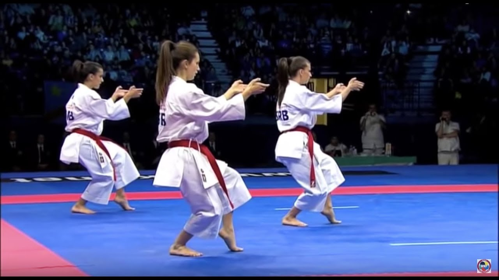

Con il termine Kata si indica, nelle arti marziali giapponesi, una serie di movimenti codificati che rappresentano varie tecniche di combattimento in modo da evidenziarne i principi fondanti e le opportunità di esecuzione ottimali (spazio, tempo e velocità).
Ogni kata è composto da una serie di movimenti che ne costituiscono la caratteristica evidente, ma presenta altri elementi che sfuggono alla comprensione più immediata: i maestri che li hanno creati hanno spesso volutamente mascherato il significato di alcuni passaggi per evitare che altri se ne impadronissero. Per esempio i kata vennero mimetizzati in danze innocue nel periodo in cui ad Okinawa vigeva la proibizione di praticare le arti marziali.

| Kyu | Home | Kumite |